Telly atmospheric teleconnection model
From ERA5 observations, to simple equations, to the Telly model
[Presenter name] · [Course] · [Date]
Overview
1
What does the time-mean atmosphere look like?
2
Why? Simple equations from class
3
From the class equations to a model
4
Three forcings switched on one at a time
5
What each forcing does to the pattern
Telly · stationary Rossby waves
Part 1
What does the time-mean atmosphere look like?
Part 1 · Observations
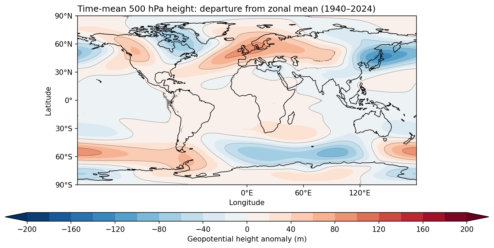
ERA5 daily 500 hPa height, 1940–2024: the time mean minus its zonal mean · Telly · stationary Rossby waves
Part 1 · Observations
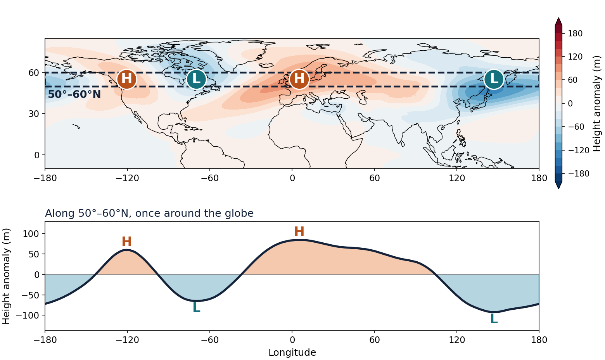
Count the highs and lows
Follow the dashed band once around the globe: 2 highs (H) and 2 lows (L).
So about 2 waves
Their sizes and spacing are uneven, so waves 1 and 3 are present too.
In wavenumbers
2 waves around 55°N is a wavelength of about 11,500 km: k ≈ 5 × 10⁻⁷ per metre.
ERA5 daily 500 hPa height, 1940–2024: time mean minus zonal mean · Telly · stationary Rossby waves
A question for the class
We will look for the answer with a hierarchy of models: simple equations first, then Telly.
Telly · stationary Rossby waves
Part 2
Understanding it with the equations from class
Part 2 · Simple equations
u = ū + u* + u′
v = v̄ + v* + v′
ū
The average around a latitude circle: the same at every longitude.
u*
The part that stays put: the waves in the ERA5 map.
u′
Day-to-day weather that comes and goes.
η = ζ + f is the absolute vorticity; on the β-plane, f = f₀ + βy.
Telly · stationary Rossby waves
Part 2 · Simple equations
∂ζ*/∂t + ū ∂ζ*/∂x + β v* = 0
∂ζ*/∂t: how the wave’s vorticity changes
ū ∂ζ*/∂x: carried eastward by the mean wind
β v*: changes as air moves north or south, where the planet’s own vorticity is different
The waves are small, so products of wave terms are dropped
Day-to-day weather is ignored
The flow is nearly non-divergent
Telly · stationary Rossby waves
Part 2 · Simple equations
1 · Define a streamfunction
u* = −∂ψ*/∂y, v* = ∂ψ*/∂x, ζ* = ∇²ψ*
2 · Substitute into the vorticity equation
(∂/∂t + ū ∂/∂x) ∇²ψ* + β ∂ψ*/∂x = 0
3 · Try a wave, and find its frequency and phase speed
ψ* = A e^{i(kx + ly − ωt)}
ω = ūk − βk/K², c = ω/k = ū − β/K²
4 · Which waves can stand still? Set c = 0
k² + l² = Ks² = β/ū
Only east–west (k) and north–south (l) wavenumbers that satisfy this stay put. Ks (s for stationary) is the total wavenumber of a stationary wave.
Stationary does not mean no motion
Air still flows through the pattern at speed ū. The pattern stays put because westward wave propagation, β/K², cancels the eastward flow.
Example
ū = 20 m/s at 45°N gives Ks ≈ 9 × 10⁻⁷ per metre. Two waves around the globe use k ≈ 4 × 10⁻⁷, which leaves l ≈ 8 × 10⁻⁷.
Here ω is the wave frequency, K² = k² + l², and β = 2Ω cos φ / a · Telly · stationary Rossby waves
Part 2 · Simple equations
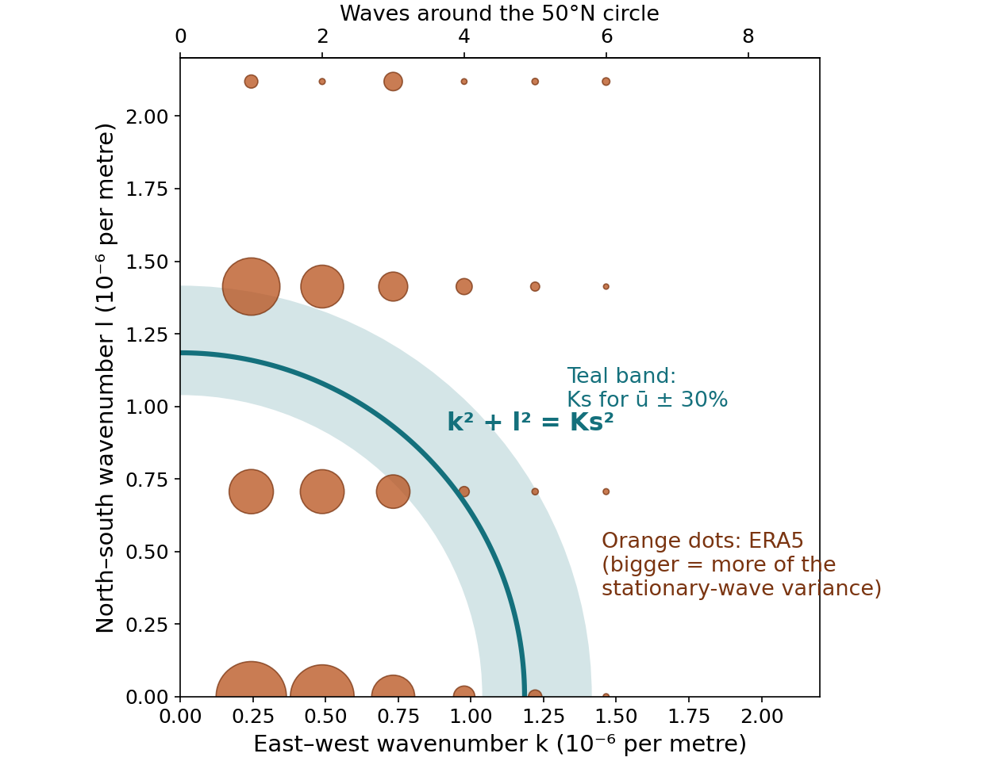
1 · Measure k and l in ERA5
Split the 500 hPa pattern between 30°N and 70°N into waves around the globe (k) and waves from south to north (l).
2 · Draw the stationary circle
With the observed ū ≈ 10 m/s, k² + l² = β/ū is a circle with Ks ≈ 1.2 × 10⁻⁶ per metre.
What we find
Almost all of the pattern is 1 to 3 waves around the globe, with one or two half-waves from south to north. About 60% of it lies within 50% of the circle. The rest is larger scale.
ERA5 1991–2020 time mean; 30°N–70°N; ū is the 500 hPa zonal-mean wind · Telly · stationary Rossby waves
Part 2 · Simple equations
∂ζ*/∂t + ū ∂ζ*/∂x + β v* = S
S is a push on the wave: anything that squeezes or stretches columns of air, and so changes their spin.
A column pushed up a mountain is squeezed, which changes its spin.
Columns are stretched below the heating and squeezed above it.
Land and ocean warm differently: like heating over one and cooling over the other.
ψ* = S / [ik(β − ūK²)]
The steady response is strongest when the size of the push matches Ks, the stationary wavenumber from the last slide: Ks = √(β/ū), where c = 0.
Telly · stationary Rossby waves
Part 2 · Simple equations
The wind carries temperature; heating Q warms the air. There is no compression term yet.
∂T/∂t + u ∂T/∂x + v ∂T/∂y + ω ∂T/∂p = Q/cp
Temperature sets how far apart the pressure surfaces are.
∂Φ/∂p = −RT/p
Air that converges sideways must move vertically.
∂u/∂x + ∂v/∂y + ∂ω/∂p = 0
Telly · stationary Rossby waves
Part 2 · Simple equations
Q = Qrad + Qlatent + Qsurface
| Process | What it is | In Telly |
|---|---|---|
| Radiation | Sunlight absorbed, infrared emitted: warms the tropics, cools the poles | Not computed; the pull toward the background temperature stands in for it |
| Latent heating | Heat released when water vapor condenses into rain | Prescribed from observed rainfall: the Q/cp term |
| Surface heating | Warm land or ocean heats the air above it by mixing | Not computed; carried by the background temperature (the land–sea contrast) |
So far we have thought of Q as radiative heating. In Telly, Q is the latent heating only.
Telly has no solar heating or outgoing longwave radiation, so no energy balance: the equator-to-pole temperature contrast is imposed by the background state, not produced.
Telly · stationary Rossby waves
Part 3
From the class equations to a model
Part 3 · Telly
Observations
Everything acts at once, so the causes are hard to separate.
Class
Easy to understand, but many things are dropped.
Today
Keeps the main physics, and each forcing can be switched on or off.
Each step answers a different question: what do we see, why does it happen, and how much does each cause matter?
Telly · stationary Rossby waves
Part 3 · Telly
| Property | Description |
|---|---|
| The physics | The class equations for motion, heat and mass, without the simplifications |
| The grid | Boxes about 2° wide (about 200 km), in 26 layers up to about 2 hPa |
| What it tracks | Vorticity, divergence, temperature and surface pressure |
| Simple stand-ins | Friction, smoothing, a pull toward a background state, and heating from prescribed rainfall patterns |
| Left out | Detailed treatment of radiation, clouds, the boundary layer and the land surface |
Telly · Kirtman et al. (2025), Bull. Amer. Meteor. Soc., 106, E2073–E2086
Part 3 · Telly
Rainfall with a prescribed pattern warms the air
Ground height sets the bottom of the atmosphere
Average winds and temperatures the model is gently pulled toward
ζ, D, T, ln ps
Friction and smoothing keep it stable
Winds, temperature, height, heating and surface pressure, every day, in 30-day files
Telly · stationary Rossby waves
Part 3 · Telly
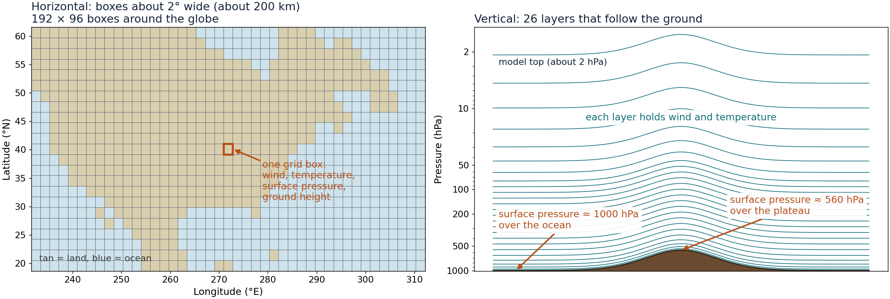
About 480,000 boxes in all: 192 × 96 around the globe, in 26 layers.
Telly · stationary Rossby waves
Part 3 · From class to Telly
Class
∂ζ*/∂t + ū ∂ζ*/∂x + β v* = 0
Telly
∂ζ/∂t + u ∂ζ/∂x + v ∂ζ/∂y + β v = …
Telly · stationary Rossby waves
Part 3 · From class to Telly
∂ζ/∂t + V·∇ζ + β v = −(ζ + f) D
D = ∂u/∂x + ∂v/∂y is the divergence of the wind.
−∇·(ηV) = −V·∇ζ − β v − (ζ + f) D
Telly computes all three terms at once, as one quantity: −∇·(ηV).
Telly · stationary Rossby waves
Part 3 · From class to Telly
Why: air that moves up or down changes pressure, and that changes its temperature even with no heating.
1 · First law for a moving air parcel
cp DT/Dt − αω = Q
2 · Use the ideal gas law, α = RT/p
DT/Dt = κTω/p + Q/cp, κ = R/cp
3 · Write out DT/Dt
∂T/∂t + u ∂T/∂x + v ∂T/∂y + ω ∂T/∂p − κTω/p = Q/cp
What it means
Rising air (ω < 0) expands and cools. Sinking air (ω > 0) is compressed and warms.
The class term ω ∂T/∂p only carries temperature up or down. It has no expansion or compression in it.
At 500 hPa, ∂T/∂p ≈ 0.095 K/hPa but κT/p ≈ 0.14 K/hPa: leaving compression out gets the vertical response wrong by a factor of 2.
Typical values: T = 250 K, lapse rate 6.5 K/km · Telly · stationary Rossby waves
Part 3 · From class to Telly
Φ = Φs + R ∫ T d(ln p)
∂u/∂x + ∂v/∂y + ∂ω/∂p = 0
The temperatures of all 26 layers give the height of every pressure surface. The ground height Φs is the bottom of the sum: this is where mountains enter.
Convergence in each layer gives the vertical motion ω between layers.
Each layer has its own wind, temperature and ω. The terms ω ∂T/∂p and compression link neighboring layers.
Telly · stationary Rossby waves
Part 3 · From class to Telly
Friction, smoothing and a gentle pull toward a background state keep the model realistic and stable.
| What it does | Written as | How fast |
|---|---|---|
| Pulls temperature and surface pressure toward the background state | −(T − Tref)/τ | 40 days |
| Friction: pulls vorticity and divergence toward the background state | −(ζ − ζref)/τ | 150 days |
| Smooths the smallest scales | diffusion | 21 to 28 hours |
The pull is faster for the zonal mean (7 days) and for the lowest two layers (2 to 3 days).
The background state is a choice, and our experiments change it.
Telly · stationary Rossby waves
Part 3 · Telly
∂ζ/∂t = −∇·(ηV) − R k·(∇T × ∇ln ps) − (ζ − ζref)/τ + smoothing
∂D/∂t = k·∇×(ηV) − ∇²(Φ + ½V·V) − R ∇·(T ∇ln ps) − (D − Dref)/τ + smoothing
■ from class
■ added in Telly
■ forcing
The first term is steps 1 and 2 together. Divergence D now has its own equation: it is how Telly follows columns stretching and squeezing.
The height Φ includes the ground height Φs, so terrain pushes on D.
Some vertical terms are left out of this view · Telly · stationary Rossby waves
Part 3 · Telly
∂T/∂t = −V·∇T − ω ∂T/∂p + κTω/p + Q/cp − (T − Tref)/τ + smoothing
∂(ln ps)/∂t = −V·∇(ln ps) − (sum of D over all layers) − (ln ps − ln psref)/τ
Φ = Φs + R ∫ T d(ln p)
■ from class
■ added in Telly
■ forcing
The temperature equation is the class equation plus compression, a pull toward the background state and smoothing.
Surface pressure is new: it changes where columns converge or diverge.
Telly writes the advection terms in an equivalent form · Telly · stationary Rossby waves
Part 3 · Telly
Φs
Ground height is the bottom of the height sum, so it pushes on the divergence
−(T − Tref)/τ
Land and ocean are pulled toward different background temperatures, like heating and cooling
Q/cp
Rainfall heating in the temperature equation
Each one is a kind of source S from the class equation.
Telly · stationary Rossby waves
Part 3 · Telly
P ~ Gamma(k, θ)
Q/cp = β · exp(−φ²/1000) · P · s
Vertical profile s, top of the model to the ground
Peaks in the middle of the troposphere; scaled so it adds up to 1.
Telly · stationary Rossby waves
Part 3 · Telly
2°
Grid boxes about 200 km wide
26
Layers in the vertical
4 min
Time step: the equations are advanced every 4 minutes
1 day
of computer time for a 5-year run
Telly · stationary Rossby waves
Part 3 · Telly
| Input | What it describes | Where it comes from |
|---|---|---|
| Ground height | The height of the terrain at each point | A gridded topography data set |
| Surface pressure | Average surface pressure for each day of the year | NCEP reanalysis, 1994–2024 |
| Winds and temperature | Average through the year in every layer: the background state | NCEP reanalysis, 1994–2024 |
| Starting temperature | Where the model begins | NCEP plus a typical decrease with height |
| Rainfall statistics | How much it rains each day, and how variable it is | Fit to daily satellite rainfall |
| Land–sea map | The fraction of land in each grid box | ERA5 land–sea mask |
Monthly averages are interpolated to every day of the year. These inputs are prepared once and reused by every run.
Telly · stationary Rossby waves
Why the background state matters
A run that keeps the observed background state is pulled toward the answer. These experiments use a background state that is the same at every longitude, and add each forcing separately.
Telly · stationary Rossby waves
Part 3 · Telly
1
Put the data on the model grid
2
Step the equations forward in time
3
Interpolate to standard pressure levels
4
Time means and differences
One settings file per experiment
Mountains: real
Land–sea contrast: on
Heating: observed
Length: 5 years
Telly · stationary Rossby waves
Part 3 · Telly
| Output | Contents | Step |
|---|---|---|
| Daily model fields | Winds, temperature, height, heating and surface pressure in every layer, one file per 30 days | 2 |
| Saved state | Lets a run be continued where it stopped | 2 |
| Pressure-level fields | Winds, temperature and height at 850, 500, 300 and 200 hPa | 3 |
| Figures | Time-mean maps and differences from a control run | 4 |
61
30-day files make up a 5-year run
≈ 0.5 GB
per file, about 33 GB for 5 years
Telly · stationary Rossby waves
Part 4
Three forcings switched on one at a time
Part 4 · Experiments
| Forcing | Off | On | What it changes |
|---|---|---|---|
| Mountains | Flat: ground height set to zero | Real topography | The ground under the air |
| Land–sea contrast | Background temperature the same at every longitude | Observed land–ocean temperature differences added | The background temperature |
| Diabatic heating | Rainfall the same at every longitude | Observed rainfall | The latent heating, Q/cp |
Each switch changes only its own part of the model. The next three slides show what each one looks like.
Telly · stationary Rossby waves
Part 4 · Experiments · forcing 1 of 3
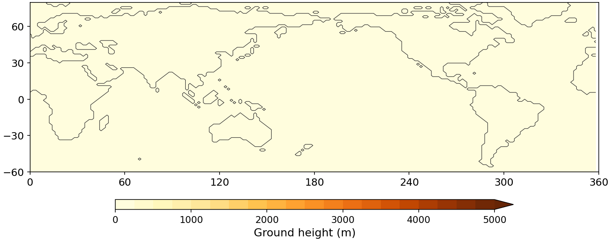
Ground height is zero at every point: no Himalayas, Rockies or Andes. The wind meets no slopes.
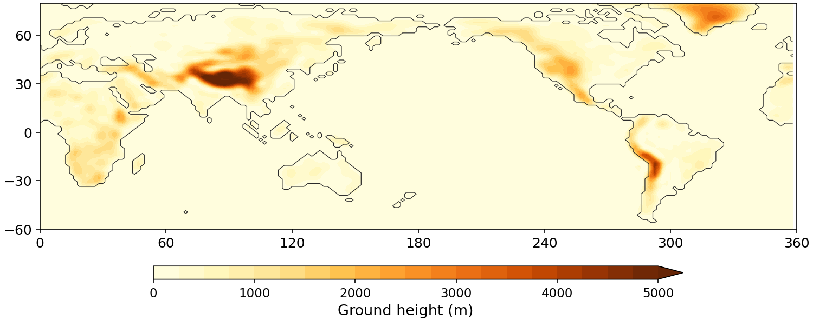
Real terrain, with surface pressure lowered to match (about 560 hPa over Tibet, not 1010).
What it changes: The ground under the air. Air forced over a slope stretches and squeezes columns of air: a source S for waves.
Telly · stationary Rossby waves
Part 4 · Experiments · forcing 2 of 3
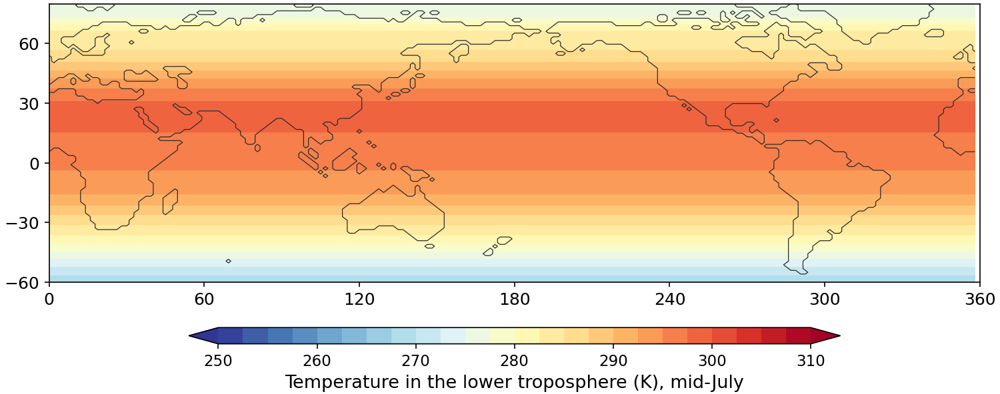
The background temperature depends on latitude only: warm tropics, cold poles.
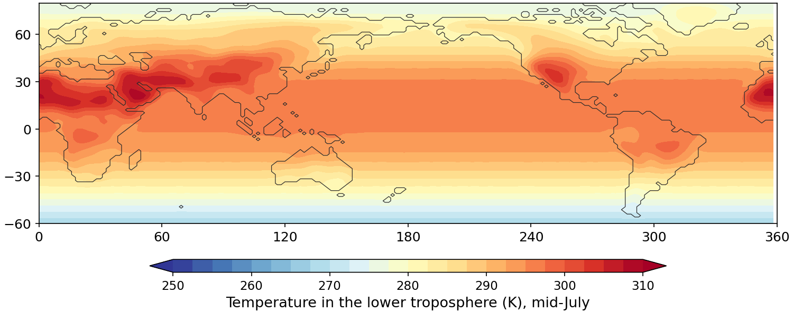
Observed land departures added over land only. The zonal average is unchanged.
What it changes: The background temperature the model is pulled toward. Warm or cool land acts like a heating or cooling pattern.
Telly · stationary Rossby waves
Part 4 · Experiments · forcing 3 of 3
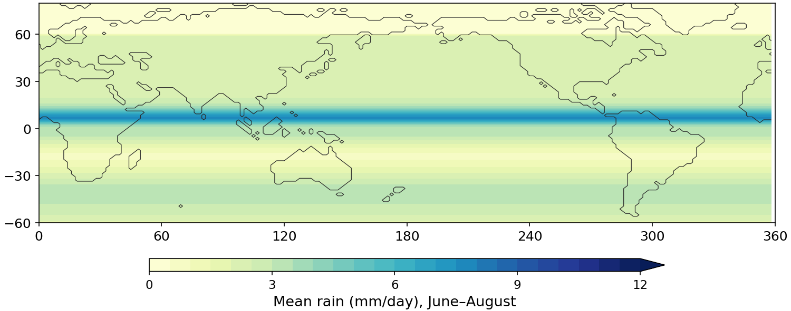
The same average rain all the way around each latitude circle: one tropical band.
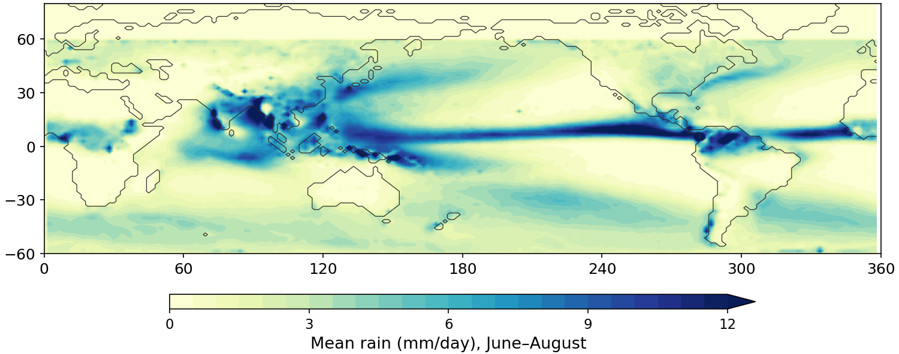
Rain falls where it really does: the Indian Ocean, western Pacific, and the Americas.
What it changes: Where latent heat is released. Heating in some places and not others pushes on the waves.
Telly · stationary Rossby waves
Part 4 · Experiments
| Run | Mountains | Land–sea | Heating | What it shows |
|---|---|---|---|---|
| Baseline | off | off | off | No longitude-dependent forcing at all |
| Mountains only | ON | off | off | The effect of mountains |
| Land–sea only | off | ON | off | The effect of land–sea contrast |
| Heating only | off | off | ON | The effect of diabatic heating |
| All three | ON | ON | ON | The full idealized model: the reference |
Run names: AC_SW_base, _mtn, _landsea, _heat and _all. For comparison, AC_Test is the same model run with the observed background state.
Telly · stationary Rossby waves
Part 4 · Experiments
Stationary eddy
z* = z − [z]
Response to a forcing
z*(run) − z*(base)
Nonlinearity
all − mtn − landsea − heat + 2·base
Telly · stationary Rossby waves
Part 5
What each forcing does to the wave pattern
Preliminary: about four model years of the five-year runs, winter and summer
Part 5 · Results · preliminary
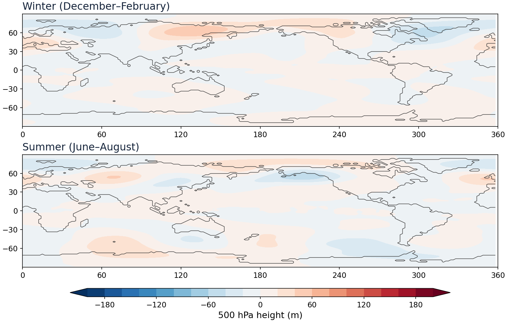
Preliminary: about 3.75 years after spin-up; winter and summer; 500 hPa height; runs still in progress
Part 5 · Results · preliminary
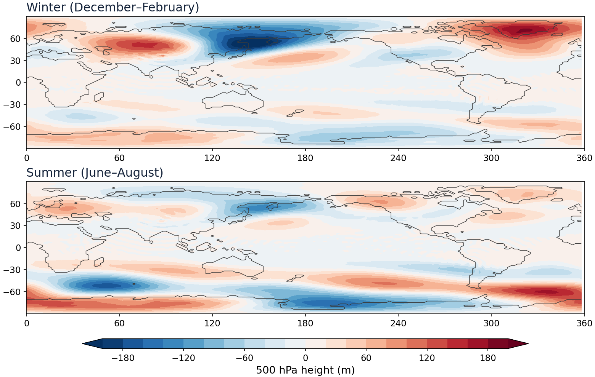
Preliminary: about 3.75 years after spin-up; winter and summer; 500 hPa height; runs still in progress
Part 5 · Results · preliminary
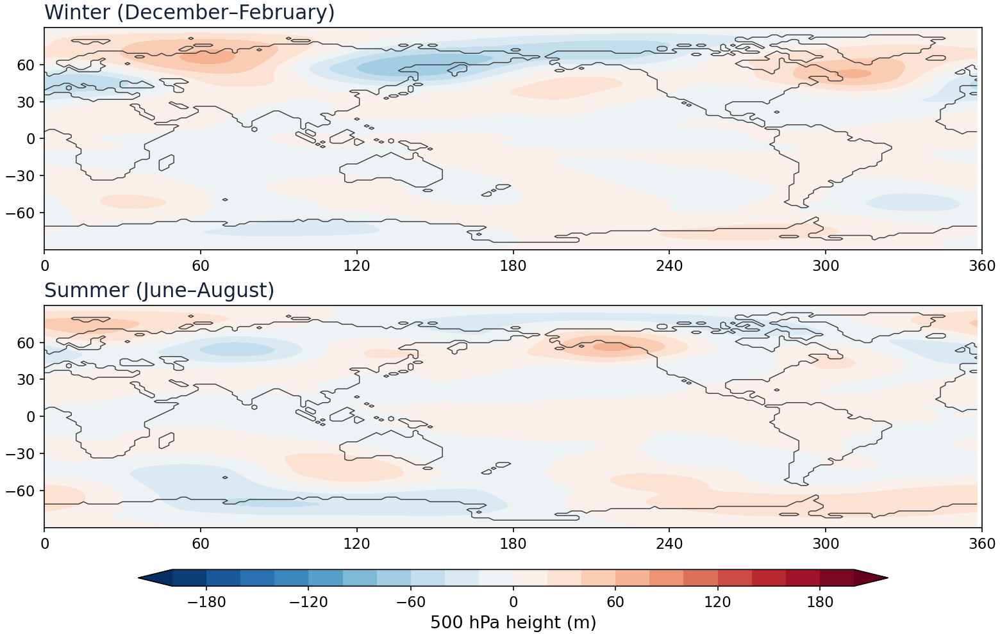
Preliminary: about 3.75 years after spin-up; winter and summer; 500 hPa height; runs still in progress
Part 5 · Results · preliminary
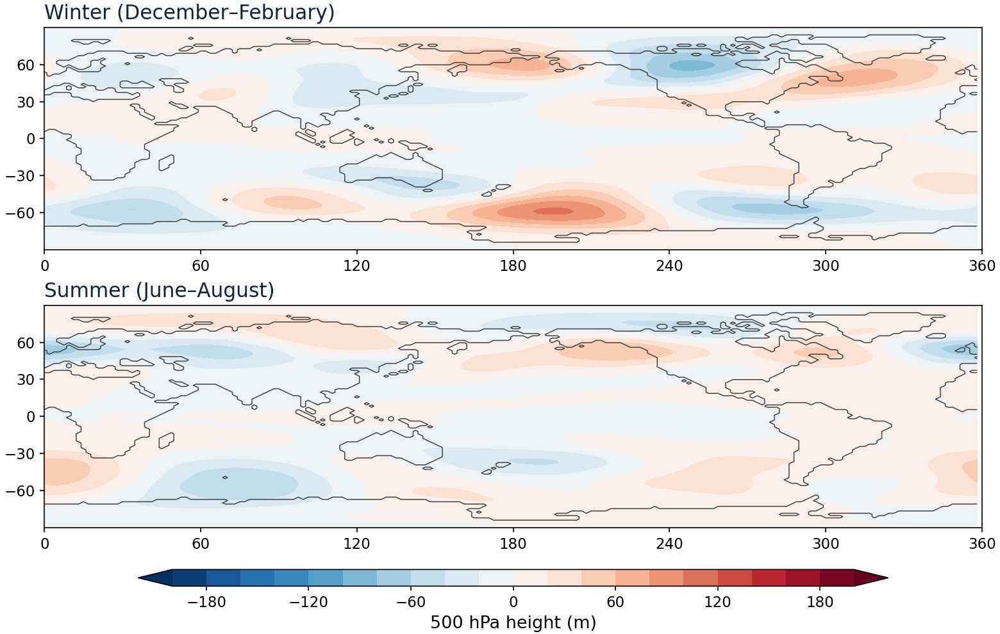
Preliminary: about 3.75 years after spin-up; winter and summer; 500 hPa height; runs still in progress
Part 5 · Results · preliminary
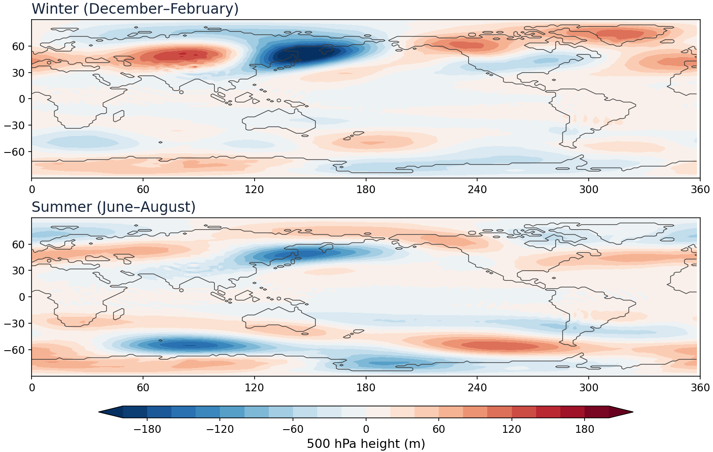
Preliminary: about 3.75 years after spin-up; winter and summer; 500 hPa height; runs still in progress
Part 5 · Results · preliminary
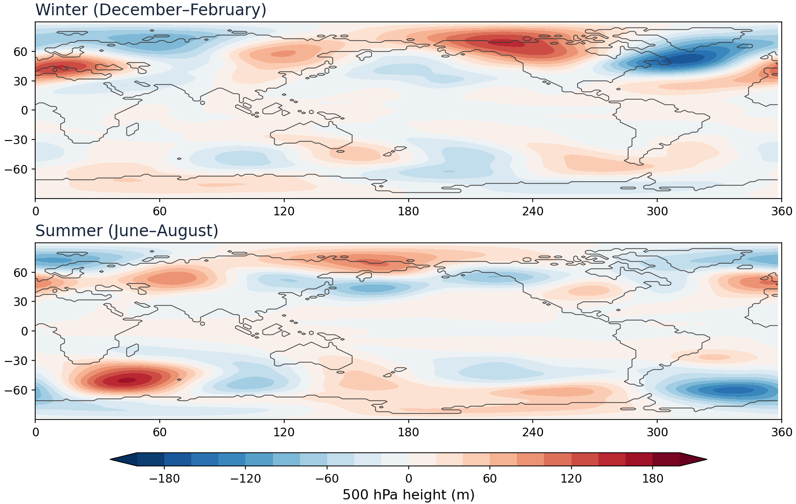
Preliminary: about 3.75 years after spin-up; winter and summer; 500 hPa height; runs still in progress
Wrap-up
1
Which forcing dominates the pattern at 500 hPa in winter, and which in summer?
2
Why must the surface pressure be placed on the terrain before mountains can be added?
3
How would you change the experiments to isolate ocean-only asymmetries such as the warm pool?
Telly · stationary Rossby waves
Appendix
Kirtman, B. P., and coauthors, 2025: A simplified-physics atmosphere general circulation model for idealized climate dynamics studies. Bull. Amer. Meteor. Soc., 106, E2073–E2086.
doi.org/10.1175/BAMS-D-24-0196.1
github.com/ou-esplab/Telly
config/experiments/AC_SW_*.yaml
scripts/stationary_waves.py
EXPERIMENTS.md
Original model: github.com/jsb288/Atmospheric-Teleconnection-Model
Telly · stationary Rossby waves